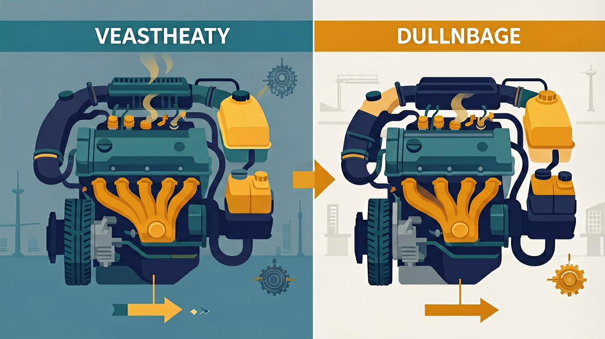

Gallery v3.0.0 · skill v7.20
为什么汽车发动机工作时会发烫？探究内燃机如何将燃料燃烧转化为车轮转动的奥秘
点击「下一步」逐步观看，或「自动播放」连续演示；图片中会高亮当前步骤的关键部位。
演示燃气压强、活塞行程与热机效率的定量关系
将内燃机四个冲程按工作顺序排列（按住条目上下拖动）
🎯 能说出四冲程内燃机的工作循环
🎯 能计算给定燃料的热机效率
🎯 能分析影响热机效率的3个因素
❓ 为什么汽车排气管会冒白烟？
❓ 内燃机效率能超过100%吗？
❓ 烧同样的油，为啥有的车跑得更远？
学完这一课，这些问题你都能自信地回答。
已经知道：学生已掌握机械能守恒、内能概念，了解汽油燃烧会释放热量
但问题是：难以理解内能如何定向转化为机械能，常误认为所有冲程都对外做功
所以学：需要建立工作循环模型，定量分析能量转化效率
热机效率通常
And：学生见过汽车发动机工作
But：不清楚内部如何将燃烧转化为动力
Therefore：建立热机基本模型
热机是把内能转化为机械能的装置。以汽油机为例：1kg汽油燃烧释放4.6×10⁷J热量，其中约1.2×10⁷J转化为活塞运动的机械能（其余被废气带走或散热）。四冲程中只有做功冲程能量转化，其他冲程靠飞轮惯性完成。
🌍 摩托车启动时，排气管发烫且冒出热气，说明部分能量以热的形式散失了。观察排气管温度能判断能量损失程度。
汽油机工作时，能量转化主要发生在哪个冲程？
And：知道能量转化有损失
But：不会定量计算有效部分占比
Therefore：掌握效率公式应用
热机效率η=W有用/Q放热×100%。例如某柴油机燃烧2kg柴油（q=4.3×10⁷J/kg）放热8.6×10⁷J，输出有用功2.58×10⁷J，则η=30%。提高效率的关键是减少散热和废气带走能量，现代汽车发动机效率通常为25%-40%。
🌍 对比两种汽车：油耗5L/100km的轿车比8L/100km的SUV效率更高，因为相同路程消耗燃料更少，做功占比更大。
某热机燃烧燃料放热5×10⁸J，输出1.5×10⁸J功，其效率为？
And：理解效率公式
But：不知如何通过变量提升效率
Therefore：分析可操作因素
影响效率的三要素：①燃料热值（氢燃料热值1.4×10⁸J/kg是汽油3倍）；②机械摩擦（润滑油减少10%摩擦可提升2%效率）；③散热控制（陶瓷气缸比金属散热减少15%）。实验表明：压缩比从9:1提高到12:1，效率可提升5%。
🌍 赛车用高标号汽油（热值更高），同时加大散热片面积——既要能量大又要控温，体现矛盾平衡。
下列哪项不能直接提高热机效率？
And：掌握理论计算
But：不会联系实际测量数据
Therefore：培养变量关联思维
通过实验测量反推效率：①用温度计测尾气温度（通常500-600℃），计算废气带走能量；②用转速计测曲轴转速（3000r/min时每秒50转），结合扭矩计算功率。例如测得某发动机30秒消耗0.1kg汽油（q=4.6×10⁷J/kg），输出功率50kW，则η=32.6%。
🌍 修车师傅用OBD检测仪读出发动机实时数据：当前转速2500rpm，油耗8.2L/100km，可估算此时效率约28%。
测量某发动机尾气温度明显升高，说明什么？
热机把燃料燃烧释放的内能转化为机械能。四冲程内燃机的一个工作循环包括吸气、压缩、做功、排气四个冲程，其中只有做功冲程对外输出机械能，压缩冲程把机械能转化为内能。热机效率是有用功与燃料完全燃烧放出热量之比。
概念本质：热机本质是通过工质（燃气）的周期性膨胀收缩，将燃料化学能→内能→机械能。关键特征是循环工作（需持续输入燃料）和能量形式的两次转化（化学能→内能→机械能），其中仅做功冲程实现有用能量输出
结构与过程：四冲程结构：1.吸气（开放进气阀吸入混合气体）→2.压缩（双阀关闭，活塞上行压缩气体，机械能→内能）→3.做功（火花塞点燃，燃气膨胀推动活塞）→4.排气（开放排气阀排出废气）。飞轮储存的动能维持非做功冲程运转
实例与证据：某1.6L汽油机单缸做功冲程燃气平均压强3×10⁶Pa，活塞行程8cm，截面40cm²，则单次做功约960J；实际效率约25-30%，主要因排气带走过半热量
易错提醒：易混点：①误认压缩冲程也对外做功 ②忽视飞轮的惯性作用 ③将总效率与燃烧效率混淆（柴油机燃烧效率40%但总效率仅35%）
先由 Q = mq 求燃料完全燃烧放出的总热量，再用 η = W 有用 / Q 总 计算效率。飞轮的惯性帮助发动机完成其余三个冲程。
常见误区：常见误区是认为四个冲程都对外做功，或把热机效率算成有用功除以燃料质量。
四冲程内燃机中，将内能转化为机械能的是？
完全燃烧 1 kg 汽油放热 4.6×10⁷ J，热机做的有用功为 1.38×10⁷ J，效率为？

💡 PhET：调节参数观察现象，把结论记录到下面的探究区。
某汽油机效率25%，消耗200g汽油（q=4.6×10^7J/kg），输出功为？
改进哪项能提高热机效率？（中考真题改编）
电动车电池效率90%，汽油车效率30%，若电能与汽油能价格相同，行驶相同距离哪种车更省钱？
✅ 强调只有做功冲程输出机械能
💡 混淆能量转化与气体排出过程
✅ 必须用W/(mq)计算总能量输入
💡 忽视燃料质量与热值关系
口诀：吸气压缩做功排，能量转化效率来
类比：热机像打工族，燃料是工资，排气是开销，做功是存款
💡 结合加热与能量转化直觉理解热机输入输出。